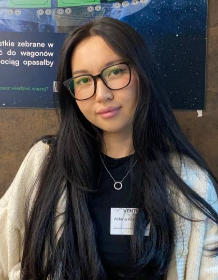

Project Manager
Praca zdalna
Koordynowanie zadań projektowych, organizacja pracy zespołu oraz wspieranie realizacji projektów w środowisku zdalnym.

Studentka i początkująca programistka
Numer indeksu: 69486
E-mail: aabylka1@stu.vistula.edu.pl
Telefon: +48 575 644 808
Miasto: Warszawa
Jestem studentką zainteresowaną programowaniem i nowymi technologiami. Rozwijam swoje umiejętności w zakresie tworzenia stron internetowych oraz programowania. Lubię uczyć się nowych narzędzi i pracować projektowo.
Praca zdalna
Koordynowanie zadań projektowych, organizacja pracy zespołu oraz wspieranie realizacji projektów w środowisku zdalnym.
Google (2024)
Udział w programie mentoringowym i rozwój kompetencji zawodowych.
42 Warsaw
2024 - 2025 | Studentka
Vistula University
Studentka